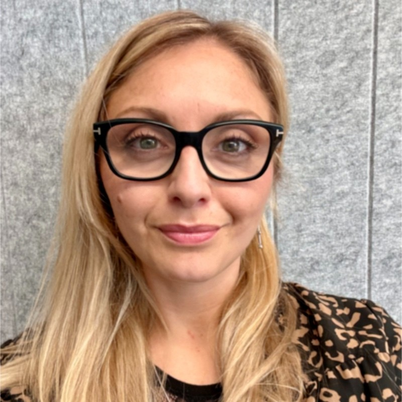
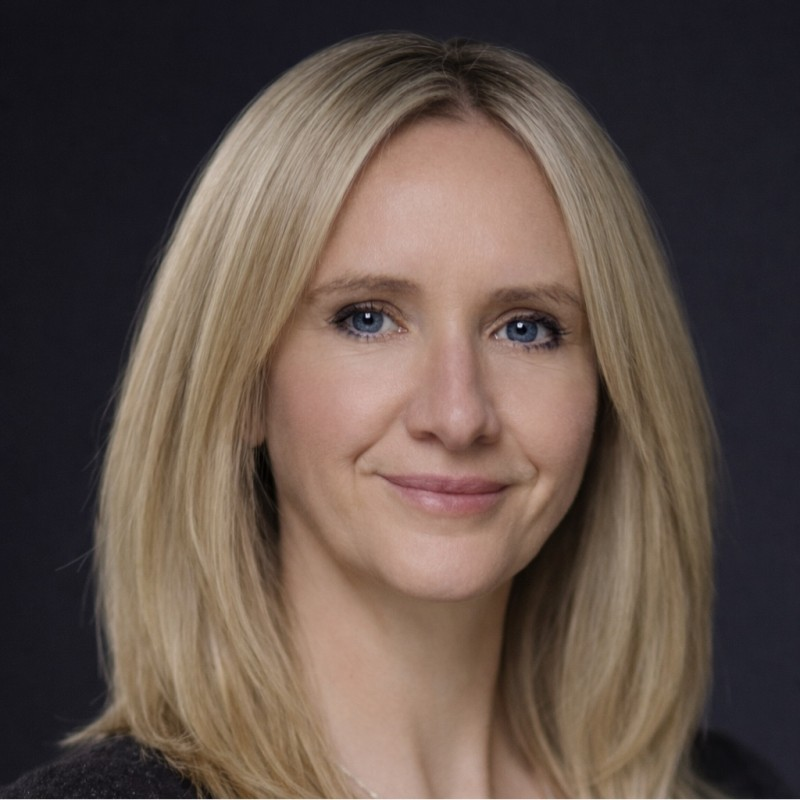
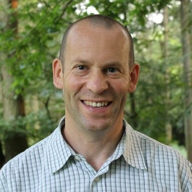
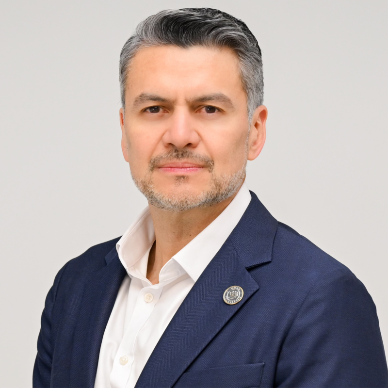
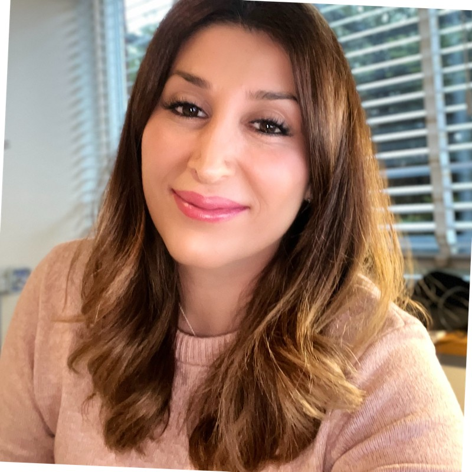
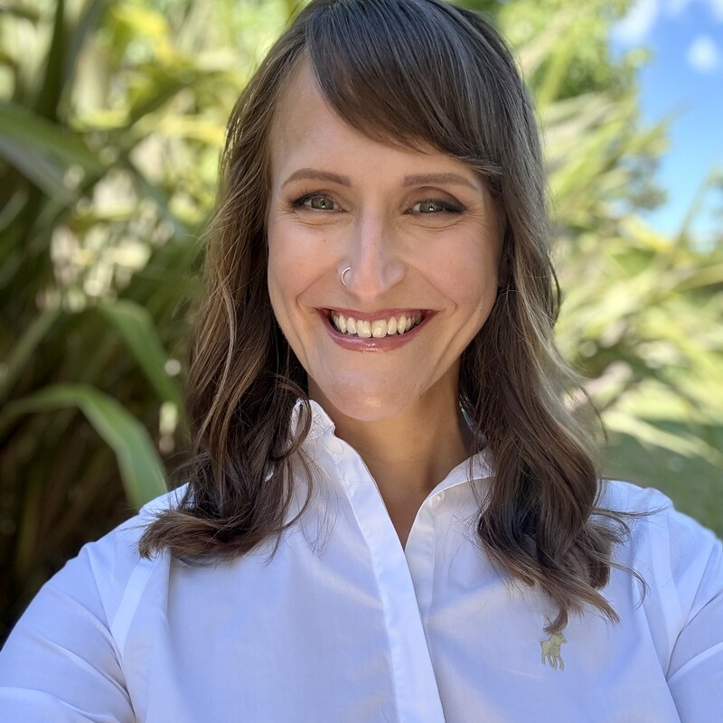
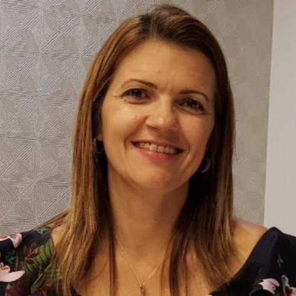
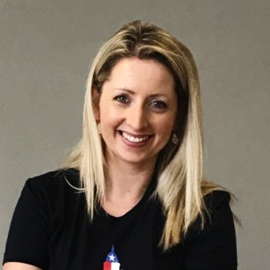

The people who make IPX a trusted community of global payroll leaders.

Global Process Owner for Payroll at Takeda, where she architects the payroll strategy, technology and compliance framework for 45,000 employees across 75 countries. With two decades of payroll leadership spanning multiple industries, Carmen brings deep operational expertise to every transformation she touches.
Animals, Sci-Fi, traveling and politics
LinkedIn →
Head of Global Payroll & Employment Tax at London Stock Exchange Group. With over 21 years in the field, Charlotte leads payroll operations and tax strategy across one of the world's most important financial market infrastructure companies — a role that demands precision, global reach and relentless attention to regulatory detail.
Traveling, sports
LinkedIn →
Global Process Owner for HR and HR Technology Lead at ADM (Archer Daniels Midland). Dave drives end-to-end process design, technology strategy and global HR data architecture for one of the world's largest agricultural processors. A master of connecting the dots — from software selection through implementation to service delivery — across complex, multi-country HR landscapes.
Travel, sport and community transformation
LinkedIn →
Global Head of HR Operations at Diageo, with 25 years shaping HR Operations, Payroll and large-scale transformation across complex, multi-market environments. Davis has led global teams and delivered HR Transformation programmes at Diageo, Mondelez and Kimberly-Clark — streamlining operations, unlocking efficiencies and elevating the employee experience. A true thought partner to the business, he builds future-fit, high-impact HR functions that create real value.
Exercise, motorcycles, and family time
LinkedIn →Managing Director of Global Services at EPI-USE with close to two decades of deep specialisation in HCM and payroll systems on SAP technology. Hans guides organisations through the full lifecycle — implementation, optimisation, migration and outsourcing — operating with equal fluency at the application and infrastructure levels. With over five years on ADP GlobalView and a track record of mentoring project teams to deliver flawless go-lives, he is the person clients turn to when the stakes are highest.
Walking, traveling
LinkedIn →Managing Director of Global Payroll & AI at EPI-USE. A self-taught developer by the age of 10 who joined the company 27 years ago and never left, Jan now leads the business responsible for implementing complex global payrolls for some of the world's largest multinationals. His career has spanned hands-on UNIX and security work, information risk management and a quantitative management degree — a rare blend of deep technical roots and sharp business instinct. Today he's obsessed with the intersection of AI and payroll.
AI, art, MTB and creative coding
LinkedIn →Senior Manager in Central Technical Employer Reward Services at KPMG. With over 33 years of tax experience, Kerry is one of the most seasoned employer reward specialists in the UK — a walking encyclopaedia of employment tax, expatriate compliance and payroll regulation. When the rules change, Kerry is already three steps ahead.
Payroll (yes, really)
LinkedIn →Head of Payroll & Reward Operations at Ricoh, an FCIPP-qualified payroll and benefits leader with 25 years of experience in the technology and services sector. Matt is passionate about payroll system implementations, razor-sharp metrics and bulletproof data integrity — the kind of operator who treats every payroll run like it matters, because it does.
Football, golf, music and cooking
LinkedIn →Head of Global Process Management for Total Rewards at Boehringer Ingelheim, one of the world's leading pharmaceutical companies. With 20+ years building, transforming and governing global HR processes and payroll operations in complex international environments, Michael is the rare leader who combines strategic HR vision with a professional foundation in controlling and finance — translating complexity into simple, robust solutions that work at global scale.
Sports, photography and cooking
LinkedIn →
Payroll Transformation Project Lead at Syensqo, driving the reinvention of global payroll operations for the specialty chemicals giant. Nastaran has built her career across every dimension of payroll — from front-line consulting at NGA and Xerox, through global connectivity leadership at ADP, to process excellence ownership at Nouryon. She navigates multi-country payroll transformations with a combination of hands-on technical depth and strategic vision.
Languages, travel and operational excellence
LinkedIn →
Global Payroll Strategy & Transformation Manager at EPI-USE. With a career forged in the operational trenches at Strada, ADP and SLB, Zsófi brings a rare 360-degree perspective — from execution reality to boardroom strategy. She partners with multinationals to design modern, scalable payroll landscapes aligned with cloud migration and enterprise transformation, turning payroll from a transactional necessity into a strategic enabler. A regular conference speaker and payroll podcast guest, she is one of the most compelling voices advocating for a future-ready view of global payroll.
Martial arts, running, foreign languages, traveling
LinkedIn →Head of European Marketing for EPI-USE Labs with 10 years of industry experience.
Running
LinkedIn →

Process Excellence Leader for Payroll at Meta. Collaborates with cross-functional partners and technology teams to automate and streamline payroll lifecycle processes.
DIY / Home projects, Art and Equestrian Sports
LinkedIn →